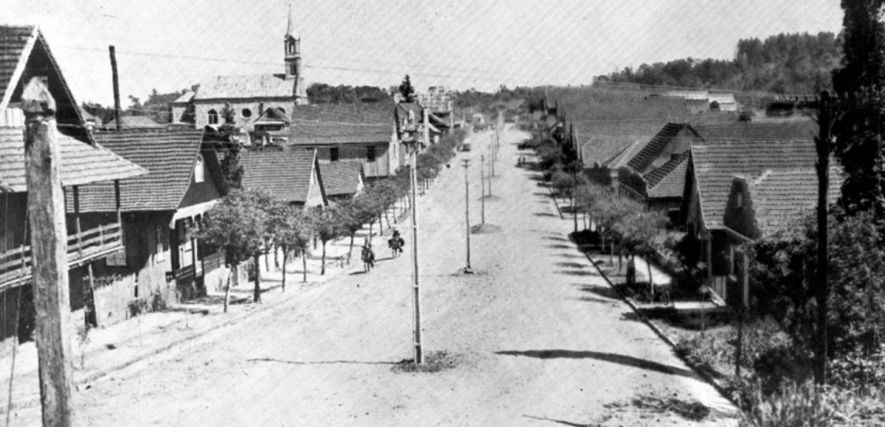
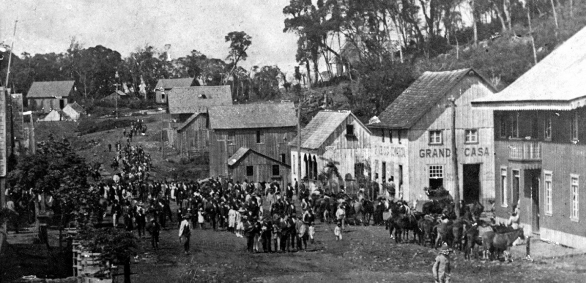

História de Gramado
A história de Gramado começa por volta de 1875, quando imigrantes alemães, e, posteriormente, italianos, começaram a se estabelecer na região. Antes disso, era uma área ocupada principalmente por indígenas e explorada por tropeiros que passavam pela Serra Gaúcha. A presença dos imigrantes europeus marcou profundamente a cultura, arquitetura e o modo de vida local.
Apesar de sua fundação oficial como município ter ocorrido apenas em 1954, Gramado já era uma área conhecida e frequentada por visitantes muito antes disso. Na década de 1930, o potencial turístico da região foi notado e começou a ser explorado. A construção de uma estrada que liga Porto Alegre a Caxias do Sul facilitou o acesso à cidade, e Gramado logo se tornou um destino buscado para descanso e turismo.
 